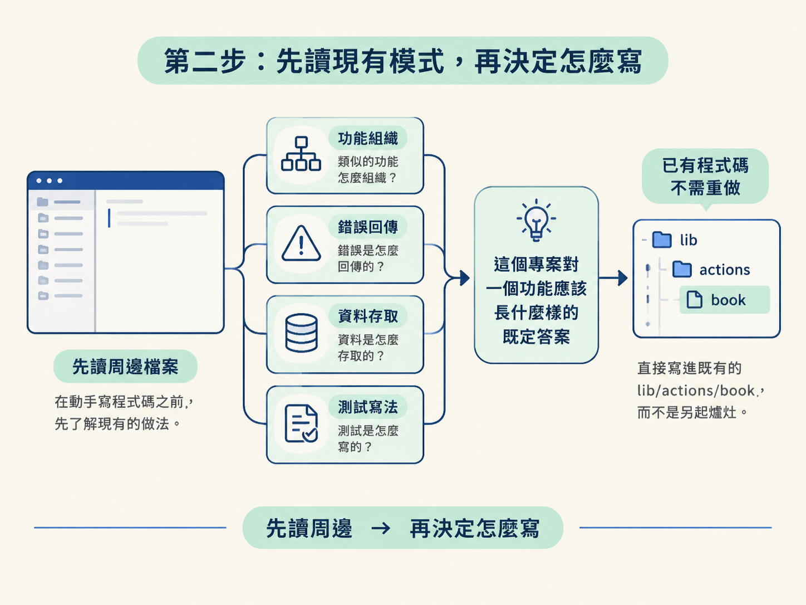
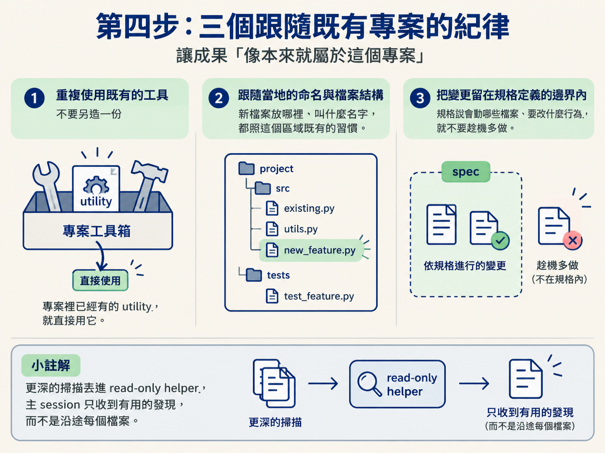
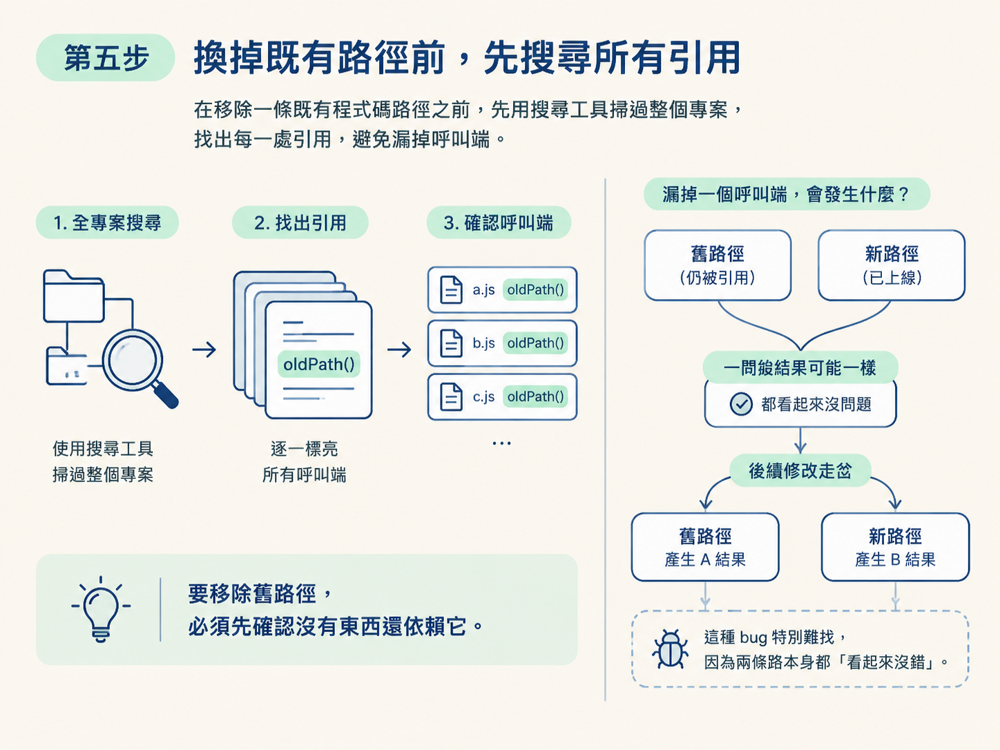

用 /develop 在舊碼庫做出最小安全變更：讀周邊檔案、沿用既有模式與工具、能用改一個現有函式解決就不另起爐灶、換路徑前先搜尋所有引用，把變更收在 spec 邊界內，做出一個不必 migration、只動四檔的成果。
上一節結束時，你手上有一份被接受的規格：specs/1. return a book，寫明變更屬於哪裡、哪些行為不能動、會動到哪些檔案，以及要怎麼證明結果。規劃和設計都談完了，現在終於要動程式碼。動手前你需要先具備的，就是這份規格，以及一個乾淨的 session。
這一節要建立的，是舊碼庫裡最實用的一種手感：讓你的變更看起來像本來就屬於這個專案。做法不是模仿表面風格，而是動手前先讀變更周圍的檔案，照著那部分既有的模式走。示範者把這件事講得很清楚：/develop 在寫任何東西之前，會先讀變更附近的檔案，跟著那段程式碼已經在用的模式。
clear develop
先把規格談定、換掉 session，再開始實作。這樣 /develop 開場拿到的是一個乾淨的起點，而不是前面幾輪規劃累積下來的雜訊。預期你會看到它在寫任何程式碼之前，先去讀變更附近的檔案。
讀周圍檔案並不是走個形式。它會看四件事：類似的功能是怎麼組織的、錯誤是怎麼回傳的、資料是怎麼存取的、測試是怎麼寫的。這四件事合起來，就是這個專案對「一個功能應該長什麼樣」的既定答案。

讀完之後，它有個重要判斷：某一段程式碼其實已經存在了，所以不需要重做，直接寫還書的 server action 就好。示範裡的落點是 lib/actions/book，因為規格已經確認這段東西本來就該在那裡。這就是「能用改一個現有函式解決，就不另起爐灶」的實例——它沒有發明新的檔案或新的流程，而是接進既有的位置。
server action 寫好之後，它接著把它接進 UI：把 admin 的 menu component 接上，並加上一個 on item select 的 callback，取代原本只印 dummy data 的 console.log。注意這裡的節奏：它不是新蓋一個選單，而是在既有的 menu component 上加一個 callback，把原本的空殼換成真的會做事的行為。
最後它新增一個 client row component，去呼叫 return book，並讓每一筆借閱紀錄都渲染出那個 row。整個功能的四個動到的檔案，大致可以這樣列出來：
1. lib/actions/book 新增 server-side admin action（含 admin 檢查） 2. components/admin/menu 加上 on item select callback，取代原本只印 dummy data 的 console.log 3. 新的 client row component 呼叫 return book 4. 讓每一筆 borrow record 逐列渲染出那個 row component
四處改動，各自都只是「把既有的東西接起來」。這正是最小變更的樣子：它不是一個從天而降的新功能，而是把既有零件缺的那幾條線接上。
整個實作過程中，有三條紀律反覆出現，它們決定了成果「像不像本來就屬於這裡」：

如果這個變更需要更深的掃描，它也可以把掃描丟進一個 read-only 的 helper 裡執行。這樣一來，主 session 只會收到有用的發現，而不是把沿途檢視過的每一個檔案都塞進 context。這和你在 context 章節學到的道理一致：把大量閱讀留在它自己的地方，只把結論帶回來。
這是舊碼庫裡最容易出事、也最值得記住的一個動作。當既有程式碼最後要被取代時，/develop 在移除它之前，會先搜尋每一處引用。為什麼要這麼做？因為如果漏掉一個呼叫端，舊路徑與新路徑就會同時活著。起初兩條路徑的結果可能一樣，但隨著後續修改走岔，它們會慢慢開始產生不同的結果——這種 bug 特別難找，因為兩條路本身都「看起來沒錯」。

所以要移除舊路徑，必須先確認沒有東西還依賴它。示範裡的這次變更最後是 migration-free 的，也沒有留下新舊並存的路徑，這正是先搜尋引用的成果。
安全的 enhancement 之所以好審，是因為它的 diff 裡只包含「這個 enhancement 需要的檔案與行為」。所以 /develop 會刻意把無關的清理排除在這次變更之外。示範裡有個有趣的插曲：它跑型別檢查，一切正常；接著它還發現了一些 lint 問題，但那些問題是本來就存在的，不是這次改動造成的。它的新程式碼本身是 lint clean 的。
即使它後來順手把那幾個既有的 lint 問題修掉了，這條原則仍然值得你記住：把無關的清理混進變更裡，會讓 review 變難，也讓「這次到底改了什麼」變得模糊。真要做的清理，值得是另一個獨立的變更。最後它更新了 spec 與 scope，並提議可以做後續的驗證。
走完這一步，你會拿到一個真正完成的功能：還書功能上線，包含 admin 的動作以及接好的 admin 下拉選單，而且不必 migration。整個變更只動了四個檔案——一個新的、帶 admin 檢查的 server-side admin action；一個取代舊 dummy console.log 的 on item select callback；一個呼叫 return book 的新 client row component；以及讓每一筆借閱紀錄渲染出那個 row 的改動。
你在一條從未碰過、也從沒走過一遍的程式庫裡，做出了一個可以被審閱的變更。會做到這個程度，關鍵在於：每一個動作都先讀了現況（讀周邊檔案、讀既有模式），再把改動收在規格邊界內。至於「為什麼要先搜尋引用」「為什麼要重用既有工具」這些原理，屬於 /scope 與 /architect 規劃階段要交代的事；在 /develop 這裡，你要的是一刀乾淨的實作。
在舊碼庫上，
/develop動手前會先讀變更周圍的檔案，跟著既有模式走：類似功能怎麼結構、錯誤怎麼回、資料怎麼存取、測試怎麼寫。能用改一個現有函式解決就不另起爐灶（示範中直接寫進既有的lib/actions/book），並把改動接到既有 component 上。三個紀律是重用既有工具、跟隨當地命名與結構、把變更留在 spec 邊界內；需要更深的掃描就交給 read-only helper，只把發現帶回主 session。換掉既有歷史前先搜尋所有引用，避免新舊路徑並存而產生分歧；無關的清理留在變更之外，讓 diff 只有這次需要的檔案與行為。最後會更新 spec 與 scope，交出一個不必 migration、只動四個檔案的成果。
變更做出來了，但「寫完」不等於「證明它不會破壞既有行為」。下一節要處理收尾：什麼時候用 check verify、什麼時候用 check review、什麼時候該在 skill 之間 clear，以及什麼情況下可以跳過 /scope 直接進 /develop。